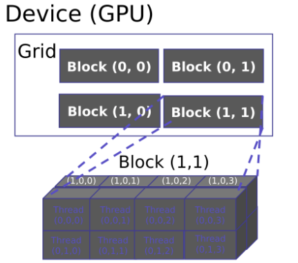
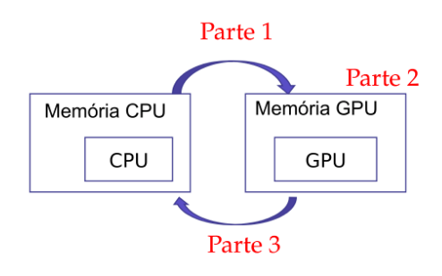

Leonardo Pereira Medeiros
Caixeiro Viajante (Multi-Core-GPU)
Introdução
Este projeto consiste no estudo de técnicas mult-core na área de otimização discreta, que se aplica a problemas em que há uma sequência de escolhas, com a característica de que a solução ótima só pode ser encontrada ao enumerar todas as escolhas possíveis. Isto significa que todo algoritmo para sua solução é O(2n) ou pior.
Neste projeto serão implementados dois métodos de otimização discreta, com processamento mult-core em GPU estes são: solução aleatoria e 2-opt.
Solução Aleatoria: Consiste em sortear um numero de soluções aleatoriamente e selecionar a que tiver menor custo, esta é uma solução simploria, com resultados não ideais, porem trata-se de uma solução inicial satisfatoria.
2-opt (local search) : Consiste em aplicar a heuristica 2-opt sobre o metodo de solução aleatoria, aplicando operações em cada iteração para melhorar o parâmetro de critério. Embora este seja um método bastante rápido, seu valor final,em algumas execuções, será apenas próximo do valor ideal, pois esse método é afetado por mínimos locais, logo o processo de inicialização aleatória e melhoria e executado diversas vezes, para reduzir esse efeito colateral.
Esse estudo de otimicação ja foi realizado em outro projeto porem aplicando tecnicas multcore em CPU, A fim de tornar a analise de otmização mais rica, os resultados obtidos no projeto em CPU serão adicionados a seção de analises para serem comparados com os resultados gerados pela implementação em GPU. A fim de concretizar possiveis vantagens e desvantages de cada aplicação. definindo a que possui melhor desempenho sobre tal tema.
GPU e CPU
Enquanto a CPU possui um design orientado a minimizar a latencia, unidades logicas aritmeticas potentes, caches grandes, controle sofisticado e uma quantidade reduzida de cores. As Gpus possuem um design orientado a minimizar o thoughput, com unidades aritmeticas simples, caches reduzidos e uma quantidade massiva de cores.
Dada essa diferença as CPUs podem ser ate 10x mais rapidas que as GPUs para codigo sequencial, enquanto a GPUs podem ser 10x mais raoidas que as CPUs para codigos paralelos.


Para utilizar todo o poder de processamento da GPU utiliza-se o CUDA(Compute Unified Device Architecture), que é uma engine de computação desenvolvida pela Nvidia, que trabalha sobre a estrutura de divisão de memória da GPU em que a thread é a menor unidade de tarefa, essas threads são agrupadas em blocos, em que as threads de um mesmo bloco podem se comunicar e se sincronizar. Os blocos por sua vez são organizados em grids, onde deverão ter a mesma dimensão (figura 2), executando a mesma função de kernel, podendo a grid ser bidimensional ou tridimensional (figura 3).

O Problema
Para aplicar os conceitos de otimização discreta foi implementado o problema do Caixeiro Viajante, que consiste em determinar a menor rota para percorrer uma série de cidades(sem repetições) e retornar a cidade de origem.
Este problema foi inspirado na necessidade dos vendedores em realizar entregas em diversos locais, percorrendo o menor caminho possível, e consequentemente reduzindo o tempo necessário para a viagem e os possíveis custos com transporte e combustível.

Estrutura Do projeto
O projeto está estruturado de forma que cada método implementado possui seu respectivo arquivo.cpp, esses arquivos possuem uma função main, responsável por definir o fluxo de dados entre CPU e GPU, conforme a figura X. Para aplicar o método de otimização discreta de forma paralela sobre o conjunto de dados, há dois kernels, definidos pela flag global:
global points_distance(1 dimensão): Pré calcula a distancias entre todos os pontos
global path_dist(2 dimenções): Calcula a distancia de um caminho gerado aleatoriamente.
Também há duas funções auxiliares em GPU, definidas pela flag device : device dist: Calcula a distância entre dois pontos
device path dist: Calcula a distância total de uma sequência de pontos.

Parte1: Copia dados CPU -> GPU Parte2: Processa dados na GPU Parte3: Copia resultados GPU -> CPU
Testes
Os inputs selecionados para testar o desempenho da aplicação de técnicas de otimização discreta foram formulados de forma a tentar levar ao máximo o processamento da GPU. Como o programa exige mais processamento quando há muitos pontos que o caixeiro deve percorrer, esse valor foi testado de forma crescente, e com grandes intervalos de iterações máximas, a fim de tentar tornar mais visível o ganho de desempenho ao aplicar essa técnica para diferentes demandas de processamento.
Os seguintes inputs foram testados:
- Input1: N = 100
- Input2: N = 500
- Input3: N = 1000
- Input4: N = 10000
Em que N representa o número de pontos no sistema.
Definido como variável de desempenho o tempo de execução do programa, foi utilizada a estrutura cudaEvent_t para mensurar esta informação, estrutura esta que permite obter este parametro no contexto da GPU.
Como deseja-se medir apenas o desempenho do algoritmo do caixeiro viajante a medição não leva em conta o tempo gasto na leitura do arquivo de input e outros processos similares.
Resultados
##import dependences
import matplotlib.pyplot as plt
import pandas as pd
import subprocess
import sys
from IPython.display import display
##files
dir_fil = "../build/"
files = ["random_sol", "random_sol_op2"]
dir_inp = "../inputs/"
inputs = ["input1", "input2", "input3", "input4"]
n_sizes = []
dic = {}
## Run files and storage output
for input in inputs:
dic[input] = {}
for f in files:
command = dir_fil + f + " < " + dir_inp + input
stout = subprocess.check_output(command, stderr=subprocess.STDOUT, shell=True).decode(sys.stdout.encoding)
dic[input][f] = float(stout.split("\n")[-2].split(":")[1])
with open(dir_inp + input, 'r') as f:
nrect = f.read().split("\n")[0]
n_sizes.append(int(nrect))
## Generate Dataframe
s0 = [dic["input1"]["random_sol"], dic["input2"]["random_sol"], dic["input3"]["random_sol"], dic["input4"]["random_sol"]]
s1 = [dic["input1"]["random_sol_op2"], dic["input2"]["random_sol_op2"], dic["input3"]["random_sol_op2"], dic["input4"]["random_sol_op2"]]
df = pd.DataFrame({"random_sol":s0, "random_sol_op2":s1,}, index = n_sizes)
display(df)
df.plot.bar(figsize = (20,14), fontsize=24, logy = True)
plt.legend(prop={'size': 20})
plt.title("Tempo de Execução X Número de Pontos", fontsize = 20)
plt.xlabel("Número de Pontos", fontsize = 20)
plt.ylabel("Tempo de execução (s)", fontsize = 20)
---------------------------------------------------------------------------CalledProcessError
Traceback (most recent call last)<ipython-input-1-765fab41fe60> in <module>
22 for f in files:
23
command = dir_fil + f + " < " + dir_inp + input
---> 24 stout =
subprocess.check_output(command, stderr=subprocess.STDOUT,
shell=True).decode(sys.stdout.encoding)
25
dic[input][f] = float(stout.split("\n")[-2].split(":")[1])
26
/usr/lib/python3.6/subprocess.py in
check_output(timeout, *popenargs, **kwargs)
354
355
return run(*popenargs, stdout=PIPE, timeout=timeout, check=True,
--> 356 **kwargs).stdout
357
358
/usr/lib/python3.6/subprocess.py in
run(input, timeout, check, *popenargs, **kwargs)
436
if check and retcode:
437
raise CalledProcessError(retcode, process.args,
--> 438 output=stdout,
stderr=stderr)
439
return CompletedProcess(process.args, retcode, stdout, stderr)
440
CalledProcessError: Command
'../build/random_sol_op2 < ../inputs/input3' returned non-
zero exit status 134.
Resultados NVPROF
s0 = [0.0, 0.0, 0.0, 0.0] ## Valores obtidos com o nvprof
s1 = [0.0, 0.0, 0.0, 0.0]
df = pd.DataFrame({"random_sol":s0, "random_sol_op2":s1,}, index = n_sizes)
display(df)
df.plot.bar(figsize = (20,14), fontsize=24, logy = True)
plt.legend(prop={'size': 20})
plt.title("Tempo de Execução X Número de Pontos", fontsize = 20)
plt.xlabel("Número de Pontos", fontsize = 20)
plt.ylabel("Tempo de execução (s)", fontsize = 20)
---------------------------------------------------------------------------ValueError
Traceback (most recent call last)/usr/lib/python3/dist-packages/pandas/core/internals.py in
create_block_manager_from_arrays(arrays, names, axes)
4637
blocks = form_blocks(arrays,
names, axes)
-> 4638 mgr =
BlockManager(blocks, axes)
4639
mgr._consolidate_inplace()
/usr/lib/python3/dist-
packages/pandas/core/internals.py in __init__(self, blocks, axes,
do_integrity_check, fastpath)
3032
if do_integrity_check:
-> 3033 self._verify_integrity()
3034
/usr/lib/python3/dist-
packages/pandas/core/internals.py in _verify_integrity(self)
3243
if block._verify_integrity and
block.shape[1:] != mgr_shape[1:]:
-> 3244 construction_error(tot_items, block.shape[1:], self.axes)
3245
if len(self.items) !=
tot_items:
/usr/lib/python3/dist-
packages/pandas/core/internals.py in construction_error(tot_items,
block_shape, axes, e)
4607 raise
ValueError("Shape of passed values is {0}, indices imply
{1}".format(
-> 4608 passed, implied))
4609
ValueError: Shape of passed values is
(2, 4), indices imply (2, 2)
During handling of the above exception, another exception occurred:
ValueError
Traceback (most recent call last)<ipython-input-1-e4c6b4178067> in <module>
2 s1 = [0.0,
0.0, 0.0, 0.0]
3
----> 4 df = pd.DataFrame({"random_sol":s0, "random_sol_op2":s1,}, index = n_sizes)
5
6
display(df)
/usr/lib/python3/dist-
packages/pandas/core/frame.py in __init__(self, data, index,
columns, dtype, copy)
328
dtype=dtype, copy=copy)
329
elif isinstance(data, dict):
--> 330 mgr =
self._init_dict(data, index, columns, dtype=dtype)
331
elif isinstance(data, ma.MaskedArray):
332
import numpy.ma.mrecords as mrecords
/usr/lib/python3/dist-
packages/pandas/core/frame.py in _init_dict(self, data, index,
columns, dtype)
459
arrays = [data[k] for k in keys]
460
--> 461 return
_arrays_to_mgr(arrays, data_names, index, columns, dtype=dtype)
462
463 def _init_ndarray(self, values, index,
columns, dtype=None, copy=False):
/usr/lib/python3/dist-
packages/pandas/core/frame.py in _arrays_to_mgr(arrays,
arr_names, index, columns, dtype)
6171 axes
= [_ensure_index(columns), _ensure_index(index)]
6172
-> 6173 return
create_block_manager_from_arrays(arrays, arr_names, axes)
6174
6175
/usr/lib/python3/dist-
packages/pandas/core/internals.py in create_block_manager_from_arrays(arrays, names, axes)
4640
return mgr
4641 except ValueError as e:
-> 4642 construction_error(len(arrays),
arrays[0].shape, axes, e)
4643
4644
/usr/lib/python3/dist-
packages/pandas/core/internals.py in construction_error(tot_items,
block_shape, axes, e)
4606
raise ValueError("Empty data passed
with indices specified.")
4607 raise
ValueError("Shape of passed values is {0}, indices imply
{1}".format(
-> 4608 passed, implied))
4609
4610
ValueError: Shape of passed values is
(2, 4), indices imply (2, 2)
CPU vs GPU
s0 = [0.0, 0.0, 0.0, 0.0] ## Valores obtidos com o projeto em CPU
s1 = [dic["input1"]["random_sol_op2"], dic["input2"]["random_sol_op2"], dic["input3"]["random_sol_op2"], dic["input4"]["random_sol_op2"]]
df = pd.DataFrame({"random_sol":s0, "random_sol_op2":s1,}, index = n_sizes)
display(df)
df.plot.bar(figsize = (20,14), fontsize=24, logy = True)
plt.legend(prop={'size': 20})
plt.title("Tempo de Execução X Número de Pontos", fontsize = 20)
plt.xlabel("Número de Pontos", fontsize = 20)
plt.ylabel("Tempo de execução (s)", fontsize = 20)
---------------------------------------------------------------------------KeyError
Traceback (most recent call last)<ipython-input-1-dbb3c437c873> in <module>
1 s0 = [0.0,
0.0, 0.0, 0.0] ## Valores
obtidos com o projeto em CPU
----> 2 s1 = [dic["input1"]["random_sol_op2"], dic["input2"]["random_sol_op2"], dic["input3"]["random_sol_op2"], dic["input4"]["random_sol_op2"]]
3
4 df = pd.DataFrame({"random_sol":s0, "random_sol_op2":s1,}, index = n_sizes)
5
KeyError: 'random_sol_op2'
Conclusão
Especificações da Máquina utilizada
Arquitetura: x86_64
Modo(s) operacional da CPU: 32-bit, 64-bit
Ordem dos bytes: Little Endian
CPU(s): 4
Lista de CPU(s) on-line: 0-3
Thread(s) per núcleo: 2
Núcleo(s) por soquete: 2
Soquete(s): 1
Nó(s) de NUMA: 1
ID de fornecedor: GenuineIntel
Família da CPU: 6
Modelo: 61
Nome do modelo: Intel(R) Core(TM) i7-5500U CPU @ 2.40GHz
Step: 4
CPU MHz: 2430.779
CPU MHz máx.: 3000,0000
CPU MHz mín.: 500,0000
BogoMIPS: 4788.89
Virtualização: VT-x
cache de L1d: 32K
cache de L1i: 32K
cache de L2: 256K
cache de L3: 4096K
CPU(s) de nó0 NUMA: 0-3